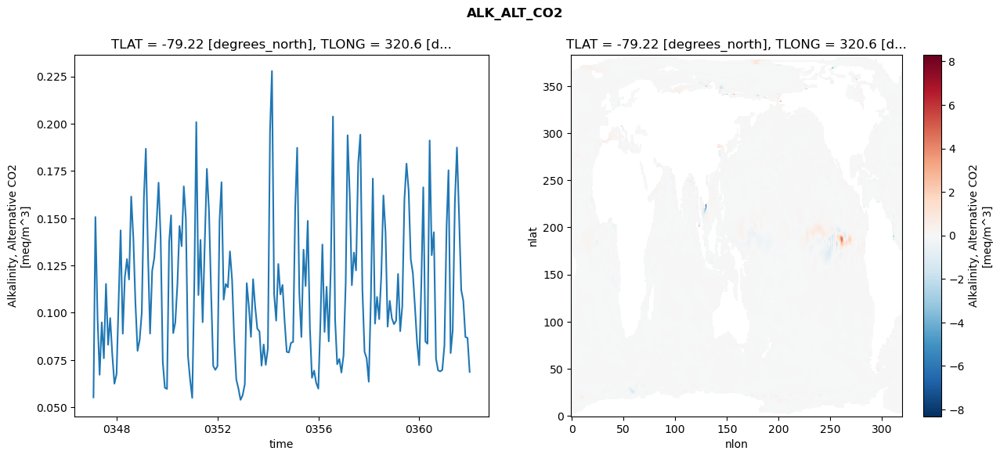
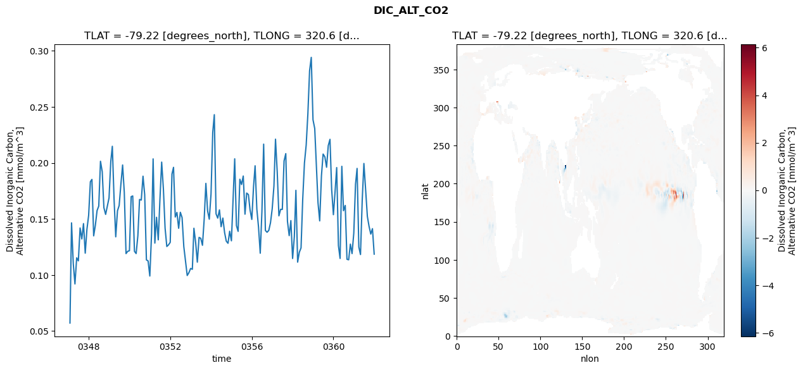
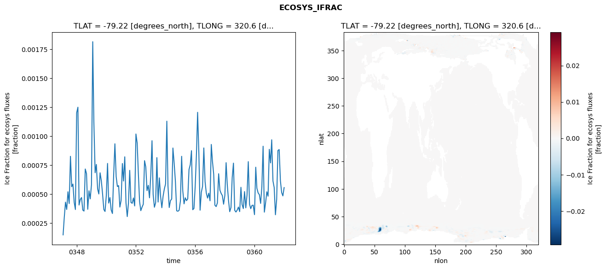
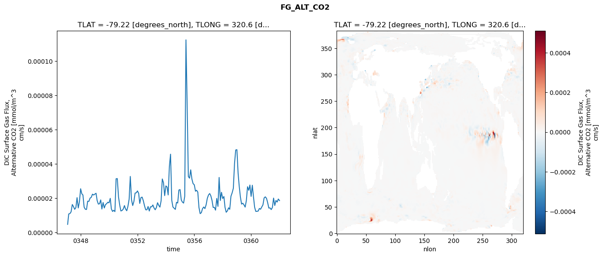

glb-dor_North_Atlantic_basin_039_1999-01-01_00156#
Simulation details#
Case: smyle.cdr-atlas-v0.glb-dor_North_Atlantic_basin_039_1999-01-01_00156.001
Basin: North_Atlantic_basin
Polygon: 39.0
Start date: 1999-01
Show code cell source Hide code cell source
import xarray as xr
import matplotlib.pyplot as plt
Show code cell source Hide code cell source
zarr_store = "/path/to/zarr/store"
# Parameters
zarr_store = "/global/cfs/projectdirs/m4746/Projects/Ocean-CDR-Atlas-v0/data/validation/smyle.cdr-atlas-v0.glb-dor_North_Atlantic_basin_039_1999-01-01_00156.001.validation.zarr"
Show code cell source Hide code cell source
%%time
ds_o = xr.open_zarr(zarr_store).compute()
ds_o
CPU times: user 651 ms, sys: 403 ms, total: 1.05 s
Wall time: 1.25 s
<xarray.Dataset> Size: 2MB
Dimensions: (nlat: 384, nlon: 320, time: 180)
Coordinates:
TLAT float64 8B -79.22
TLONG float64 8B 320.6
ULAT float64 8B -78.95
ULONG float64 8B 321.1
* time (time) object 1kB 0347-02-01 00:00:00 ... 0362-01-01 0...
z_t float32 4B 500.0
Dimensions without coordinates: nlat, nlon
Data variables:
ALK_ALT_CO2_diff (nlat, nlon) float32 492kB nan nan nan ... nan nan nan
ALK_ALT_CO2_rmse (time) float64 1kB 0.05523 0.1506 ... 0.08672 0.0687
DIC_ALT_CO2_diff (nlat, nlon) float32 492kB nan nan nan ... nan nan nan
DIC_ALT_CO2_rmse (time) float64 1kB 0.05718 0.1465 ... 0.1414 0.1186
ECOSYS_IFRAC_diff (nlat, nlon) float32 492kB nan nan nan ... nan nan nan
ECOSYS_IFRAC_rmse (time) float64 1kB 0.0001475 0.0002936 ... 0.0005555
FG_ALT_CO2_diff (nlat, nlon) float32 492kB nan nan nan ... nan nan nan
FG_ALT_CO2_rmse (time) float64 1kB 4.755e-06 1.083e-05 ... 1.861e-05xarray.Dataset
- nlat: 384
- nlon: 320
- time: 180
- TLAT()float64-79.22
- long_name :
- array of t-grid latitudes
- units :
- degrees_north
array(-79.22052261)
- TLONG()float64320.6
- long_name :
- array of t-grid longitudes
- units :
- degrees_east
array(320.56250892)
- ULAT()float64-78.95
- long_name :
- array of u-grid latitudes
- units :
- degrees_north
array(-78.95289509)
- ULONG()float64321.1
- long_name :
- array of u-grid longitudes
- units :
- degrees_east
array(321.12500894)
- time(time)object0347-02-01 00:00:00 ... 0362-01-...
- bounds :
- time_bound
- long_name :
- time
array([cftime.DatetimeNoLeap(347, 2, 1, 0, 0, 0, 0, has_year_zero=True), cftime.DatetimeNoLeap(347, 3, 1, 0, 0, 0, 0, has_year_zero=True), cftime.DatetimeNoLeap(347, 4, 1, 0, 0, 0, 0, has_year_zero=True), cftime.DatetimeNoLeap(347, 5, 1, 0, 0, 0, 0, has_year_zero=True), cftime.DatetimeNoLeap(347, 6, 1, 0, 0, 0, 0, has_year_zero=True), cftime.DatetimeNoLeap(347, 7, 1, 0, 0, 0, 0, has_year_zero=True), cftime.DatetimeNoLeap(347, 8, 1, 0, 0, 0, 0, has_year_zero=True), cftime.DatetimeNoLeap(347, 9, 1, 0, 0, 0, 0, has_year_zero=True), cftime.DatetimeNoLeap(347, 10, 1, 0, 0, 0, 0, has_year_zero=True), cftime.DatetimeNoLeap(347, 11, 1, 0, 0, 0, 0, has_year_zero=True), cftime.DatetimeNoLeap(347, 12, 1, 0, 0, 0, 0, has_year_zero=True), cftime.DatetimeNoLeap(348, 1, 1, 0, 0, 0, 0, has_year_zero=True), cftime.DatetimeNoLeap(348, 2, 1, 0, 0, 0, 0, has_year_zero=True), cftime.DatetimeNoLeap(348, 3, 1, 0, 0, 0, 0, has_year_zero=True), cftime.DatetimeNoLeap(348, 4, 1, 0, 0, 0, 0, has_year_zero=True), cftime.DatetimeNoLeap(348, 5, 1, 0, 0, 0, 0, has_year_zero=True), cftime.DatetimeNoLeap(348, 6, 1, 0, 0, 0, 0, has_year_zero=True), cftime.DatetimeNoLeap(348, 7, 1, 0, 0, 0, 0, has_year_zero=True), cftime.DatetimeNoLeap(348, 8, 1, 0, 0, 0, 0, has_year_zero=True), cftime.DatetimeNoLeap(348, 9, 1, 0, 0, 0, 0, has_year_zero=True), cftime.DatetimeNoLeap(348, 10, 1, 0, 0, 0, 0, has_year_zero=True), cftime.DatetimeNoLeap(348, 11, 1, 0, 0, 0, 0, has_year_zero=True), cftime.DatetimeNoLeap(348, 12, 1, 0, 0, 0, 0, has_year_zero=True), cftime.DatetimeNoLeap(349, 1, 1, 0, 0, 0, 0, has_year_zero=True), cftime.DatetimeNoLeap(349, 2, 1, 0, 0, 0, 0, has_year_zero=True), cftime.DatetimeNoLeap(349, 3, 1, 0, 0, 0, 0, has_year_zero=True), cftime.DatetimeNoLeap(349, 4, 1, 0, 0, 0, 0, has_year_zero=True), cftime.DatetimeNoLeap(349, 5, 1, 0, 0, 0, 0, has_year_zero=True), cftime.DatetimeNoLeap(349, 6, 1, 0, 0, 0, 0, has_year_zero=True), cftime.DatetimeNoLeap(349, 7, 1, 0, 0, 0, 0, has_year_zero=True), cftime.DatetimeNoLeap(349, 8, 1, 0, 0, 0, 0, has_year_zero=True), cftime.DatetimeNoLeap(349, 9, 1, 0, 0, 0, 0, has_year_zero=True), cftime.DatetimeNoLeap(349, 10, 1, 0, 0, 0, 0, has_year_zero=True), cftime.DatetimeNoLeap(349, 11, 1, 0, 0, 0, 0, has_year_zero=True), cftime.DatetimeNoLeap(349, 12, 1, 0, 0, 0, 0, has_year_zero=True), cftime.DatetimeNoLeap(350, 1, 1, 0, 0, 0, 0, has_year_zero=True), cftime.DatetimeNoLeap(350, 2, 1, 0, 0, 0, 0, has_year_zero=True), cftime.DatetimeNoLeap(350, 3, 1, 0, 0, 0, 0, has_year_zero=True), cftime.DatetimeNoLeap(350, 4, 1, 0, 0, 0, 0, has_year_zero=True), cftime.DatetimeNoLeap(350, 5, 1, 0, 0, 0, 0, has_year_zero=True), cftime.DatetimeNoLeap(350, 6, 1, 0, 0, 0, 0, has_year_zero=True), cftime.DatetimeNoLeap(350, 7, 1, 0, 0, 0, 0, has_year_zero=True), cftime.DatetimeNoLeap(350, 8, 1, 0, 0, 0, 0, has_year_zero=True), cftime.DatetimeNoLeap(350, 9, 1, 0, 0, 0, 0, has_year_zero=True), cftime.DatetimeNoLeap(350, 10, 1, 0, 0, 0, 0, has_year_zero=True), cftime.DatetimeNoLeap(350, 11, 1, 0, 0, 0, 0, has_year_zero=True), cftime.DatetimeNoLeap(350, 12, 1, 0, 0, 0, 0, has_year_zero=True), cftime.DatetimeNoLeap(351, 1, 1, 0, 0, 0, 0, has_year_zero=True), cftime.DatetimeNoLeap(351, 2, 1, 0, 0, 0, 0, has_year_zero=True), cftime.DatetimeNoLeap(351, 3, 1, 0, 0, 0, 0, has_year_zero=True), cftime.DatetimeNoLeap(351, 4, 1, 0, 0, 0, 0, has_year_zero=True), cftime.DatetimeNoLeap(351, 5, 1, 0, 0, 0, 0, has_year_zero=True), cftime.DatetimeNoLeap(351, 6, 1, 0, 0, 0, 0, has_year_zero=True), cftime.DatetimeNoLeap(351, 7, 1, 0, 0, 0, 0, has_year_zero=True), cftime.DatetimeNoLeap(351, 8, 1, 0, 0, 0, 0, has_year_zero=True), cftime.DatetimeNoLeap(351, 9, 1, 0, 0, 0, 0, has_year_zero=True), cftime.DatetimeNoLeap(351, 10, 1, 0, 0, 0, 0, has_year_zero=True), cftime.DatetimeNoLeap(351, 11, 1, 0, 0, 0, 0, has_year_zero=True), cftime.DatetimeNoLeap(351, 12, 1, 0, 0, 0, 0, has_year_zero=True), cftime.DatetimeNoLeap(352, 1, 1, 0, 0, 0, 0, has_year_zero=True), cftime.DatetimeNoLeap(352, 2, 1, 0, 0, 0, 0, has_year_zero=True), cftime.DatetimeNoLeap(352, 3, 1, 0, 0, 0, 0, has_year_zero=True), cftime.DatetimeNoLeap(352, 4, 1, 0, 0, 0, 0, has_year_zero=True), cftime.DatetimeNoLeap(352, 5, 1, 0, 0, 0, 0, has_year_zero=True), cftime.DatetimeNoLeap(352, 6, 1, 0, 0, 0, 0, has_year_zero=True), cftime.DatetimeNoLeap(352, 7, 1, 0, 0, 0, 0, has_year_zero=True), cftime.DatetimeNoLeap(352, 8, 1, 0, 0, 0, 0, has_year_zero=True), cftime.DatetimeNoLeap(352, 9, 1, 0, 0, 0, 0, has_year_zero=True), cftime.DatetimeNoLeap(352, 10, 1, 0, 0, 0, 0, has_year_zero=True), cftime.DatetimeNoLeap(352, 11, 1, 0, 0, 0, 0, has_year_zero=True), cftime.DatetimeNoLeap(352, 12, 1, 0, 0, 0, 0, has_year_zero=True), cftime.DatetimeNoLeap(353, 1, 1, 0, 0, 0, 0, has_year_zero=True), cftime.DatetimeNoLeap(353, 2, 1, 0, 0, 0, 0, has_year_zero=True), cftime.DatetimeNoLeap(353, 3, 1, 0, 0, 0, 0, has_year_zero=True), cftime.DatetimeNoLeap(353, 4, 1, 0, 0, 0, 0, has_year_zero=True), cftime.DatetimeNoLeap(353, 5, 1, 0, 0, 0, 0, has_year_zero=True), cftime.DatetimeNoLeap(353, 6, 1, 0, 0, 0, 0, has_year_zero=True), cftime.DatetimeNoLeap(353, 7, 1, 0, 0, 0, 0, has_year_zero=True), cftime.DatetimeNoLeap(353, 8, 1, 0, 0, 0, 0, has_year_zero=True), cftime.DatetimeNoLeap(353, 9, 1, 0, 0, 0, 0, has_year_zero=True), cftime.DatetimeNoLeap(353, 10, 1, 0, 0, 0, 0, has_year_zero=True), cftime.DatetimeNoLeap(353, 11, 1, 0, 0, 0, 0, has_year_zero=True), cftime.DatetimeNoLeap(353, 12, 1, 0, 0, 0, 0, has_year_zero=True), cftime.DatetimeNoLeap(354, 1, 1, 0, 0, 0, 0, has_year_zero=True), cftime.DatetimeNoLeap(354, 2, 1, 0, 0, 0, 0, has_year_zero=True), cftime.DatetimeNoLeap(354, 3, 1, 0, 0, 0, 0, has_year_zero=True), cftime.DatetimeNoLeap(354, 4, 1, 0, 0, 0, 0, has_year_zero=True), cftime.DatetimeNoLeap(354, 5, 1, 0, 0, 0, 0, has_year_zero=True), cftime.DatetimeNoLeap(354, 6, 1, 0, 0, 0, 0, has_year_zero=True), cftime.DatetimeNoLeap(354, 7, 1, 0, 0, 0, 0, has_year_zero=True), cftime.DatetimeNoLeap(354, 8, 1, 0, 0, 0, 0, has_year_zero=True), cftime.DatetimeNoLeap(354, 9, 1, 0, 0, 0, 0, has_year_zero=True), cftime.DatetimeNoLeap(354, 10, 1, 0, 0, 0, 0, has_year_zero=True), cftime.DatetimeNoLeap(354, 11, 1, 0, 0, 0, 0, has_year_zero=True), cftime.DatetimeNoLeap(354, 12, 1, 0, 0, 0, 0, has_year_zero=True), cftime.DatetimeNoLeap(355, 1, 1, 0, 0, 0, 0, has_year_zero=True), cftime.DatetimeNoLeap(355, 2, 1, 0, 0, 0, 0, has_year_zero=True), cftime.DatetimeNoLeap(355, 3, 1, 0, 0, 0, 0, has_year_zero=True), cftime.DatetimeNoLeap(355, 4, 1, 0, 0, 0, 0, has_year_zero=True), cftime.DatetimeNoLeap(355, 5, 1, 0, 0, 0, 0, has_year_zero=True), cftime.DatetimeNoLeap(355, 6, 1, 0, 0, 0, 0, has_year_zero=True), cftime.DatetimeNoLeap(355, 7, 1, 0, 0, 0, 0, has_year_zero=True), cftime.DatetimeNoLeap(355, 8, 1, 0, 0, 0, 0, has_year_zero=True), cftime.DatetimeNoLeap(355, 9, 1, 0, 0, 0, 0, has_year_zero=True), cftime.DatetimeNoLeap(355, 10, 1, 0, 0, 0, 0, has_year_zero=True), cftime.DatetimeNoLeap(355, 11, 1, 0, 0, 0, 0, has_year_zero=True), cftime.DatetimeNoLeap(355, 12, 1, 0, 0, 0, 0, has_year_zero=True), cftime.DatetimeNoLeap(356, 1, 1, 0, 0, 0, 0, has_year_zero=True), cftime.DatetimeNoLeap(356, 2, 1, 0, 0, 0, 0, has_year_zero=True), cftime.DatetimeNoLeap(356, 3, 1, 0, 0, 0, 0, has_year_zero=True), cftime.DatetimeNoLeap(356, 4, 1, 0, 0, 0, 0, has_year_zero=True), cftime.DatetimeNoLeap(356, 5, 1, 0, 0, 0, 0, has_year_zero=True), cftime.DatetimeNoLeap(356, 6, 1, 0, 0, 0, 0, has_year_zero=True), cftime.DatetimeNoLeap(356, 7, 1, 0, 0, 0, 0, has_year_zero=True), cftime.DatetimeNoLeap(356, 8, 1, 0, 0, 0, 0, has_year_zero=True), cftime.DatetimeNoLeap(356, 9, 1, 0, 0, 0, 0, has_year_zero=True), cftime.DatetimeNoLeap(356, 10, 1, 0, 0, 0, 0, has_year_zero=True), cftime.DatetimeNoLeap(356, 11, 1, 0, 0, 0, 0, has_year_zero=True), cftime.DatetimeNoLeap(356, 12, 1, 0, 0, 0, 0, has_year_zero=True), cftime.DatetimeNoLeap(357, 1, 1, 0, 0, 0, 0, has_year_zero=True), cftime.DatetimeNoLeap(357, 2, 1, 0, 0, 0, 0, has_year_zero=True), cftime.DatetimeNoLeap(357, 3, 1, 0, 0, 0, 0, has_year_zero=True), cftime.DatetimeNoLeap(357, 4, 1, 0, 0, 0, 0, has_year_zero=True), cftime.DatetimeNoLeap(357, 5, 1, 0, 0, 0, 0, has_year_zero=True), cftime.DatetimeNoLeap(357, 6, 1, 0, 0, 0, 0, has_year_zero=True), cftime.DatetimeNoLeap(357, 7, 1, 0, 0, 0, 0, has_year_zero=True), cftime.DatetimeNoLeap(357, 8, 1, 0, 0, 0, 0, has_year_zero=True), cftime.DatetimeNoLeap(357, 9, 1, 0, 0, 0, 0, has_year_zero=True), cftime.DatetimeNoLeap(357, 10, 1, 0, 0, 0, 0, has_year_zero=True), cftime.DatetimeNoLeap(357, 11, 1, 0, 0, 0, 0, has_year_zero=True), cftime.DatetimeNoLeap(357, 12, 1, 0, 0, 0, 0, has_year_zero=True), cftime.DatetimeNoLeap(358, 1, 1, 0, 0, 0, 0, has_year_zero=True), cftime.DatetimeNoLeap(358, 2, 1, 0, 0, 0, 0, has_year_zero=True), cftime.DatetimeNoLeap(358, 3, 1, 0, 0, 0, 0, has_year_zero=True), cftime.DatetimeNoLeap(358, 4, 1, 0, 0, 0, 0, has_year_zero=True), cftime.DatetimeNoLeap(358, 5, 1, 0, 0, 0, 0, has_year_zero=True), cftime.DatetimeNoLeap(358, 6, 1, 0, 0, 0, 0, has_year_zero=True), cftime.DatetimeNoLeap(358, 7, 1, 0, 0, 0, 0, has_year_zero=True), cftime.DatetimeNoLeap(358, 8, 1, 0, 0, 0, 0, has_year_zero=True), cftime.DatetimeNoLeap(358, 9, 1, 0, 0, 0, 0, has_year_zero=True), cftime.DatetimeNoLeap(358, 10, 1, 0, 0, 0, 0, has_year_zero=True), cftime.DatetimeNoLeap(358, 11, 1, 0, 0, 0, 0, has_year_zero=True), cftime.DatetimeNoLeap(358, 12, 1, 0, 0, 0, 0, has_year_zero=True), cftime.DatetimeNoLeap(359, 1, 1, 0, 0, 0, 0, has_year_zero=True), cftime.DatetimeNoLeap(359, 2, 1, 0, 0, 0, 0, has_year_zero=True), cftime.DatetimeNoLeap(359, 3, 1, 0, 0, 0, 0, has_year_zero=True), cftime.DatetimeNoLeap(359, 4, 1, 0, 0, 0, 0, has_year_zero=True), cftime.DatetimeNoLeap(359, 5, 1, 0, 0, 0, 0, has_year_zero=True), cftime.DatetimeNoLeap(359, 6, 1, 0, 0, 0, 0, has_year_zero=True), cftime.DatetimeNoLeap(359, 7, 1, 0, 0, 0, 0, has_year_zero=True), cftime.DatetimeNoLeap(359, 8, 1, 0, 0, 0, 0, has_year_zero=True), cftime.DatetimeNoLeap(359, 9, 1, 0, 0, 0, 0, has_year_zero=True), cftime.DatetimeNoLeap(359, 10, 1, 0, 0, 0, 0, has_year_zero=True), cftime.DatetimeNoLeap(359, 11, 1, 0, 0, 0, 0, has_year_zero=True), cftime.DatetimeNoLeap(359, 12, 1, 0, 0, 0, 0, has_year_zero=True), cftime.DatetimeNoLeap(360, 1, 1, 0, 0, 0, 0, has_year_zero=True), cftime.DatetimeNoLeap(360, 2, 1, 0, 0, 0, 0, has_year_zero=True), cftime.DatetimeNoLeap(360, 3, 1, 0, 0, 0, 0, has_year_zero=True), cftime.DatetimeNoLeap(360, 4, 1, 0, 0, 0, 0, has_year_zero=True), cftime.DatetimeNoLeap(360, 5, 1, 0, 0, 0, 0, has_year_zero=True), cftime.DatetimeNoLeap(360, 6, 1, 0, 0, 0, 0, has_year_zero=True), cftime.DatetimeNoLeap(360, 7, 1, 0, 0, 0, 0, has_year_zero=True), cftime.DatetimeNoLeap(360, 8, 1, 0, 0, 0, 0, has_year_zero=True), cftime.DatetimeNoLeap(360, 9, 1, 0, 0, 0, 0, has_year_zero=True), cftime.DatetimeNoLeap(360, 10, 1, 0, 0, 0, 0, has_year_zero=True), cftime.DatetimeNoLeap(360, 11, 1, 0, 0, 0, 0, has_year_zero=True), cftime.DatetimeNoLeap(360, 12, 1, 0, 0, 0, 0, has_year_zero=True), cftime.DatetimeNoLeap(361, 1, 1, 0, 0, 0, 0, has_year_zero=True), cftime.DatetimeNoLeap(361, 2, 1, 0, 0, 0, 0, has_year_zero=True), cftime.DatetimeNoLeap(361, 3, 1, 0, 0, 0, 0, has_year_zero=True), cftime.DatetimeNoLeap(361, 4, 1, 0, 0, 0, 0, has_year_zero=True), cftime.DatetimeNoLeap(361, 5, 1, 0, 0, 0, 0, has_year_zero=True), cftime.DatetimeNoLeap(361, 6, 1, 0, 0, 0, 0, has_year_zero=True), cftime.DatetimeNoLeap(361, 7, 1, 0, 0, 0, 0, has_year_zero=True), cftime.DatetimeNoLeap(361, 8, 1, 0, 0, 0, 0, has_year_zero=True), cftime.DatetimeNoLeap(361, 9, 1, 0, 0, 0, 0, has_year_zero=True), cftime.DatetimeNoLeap(361, 10, 1, 0, 0, 0, 0, has_year_zero=True), cftime.DatetimeNoLeap(361, 11, 1, 0, 0, 0, 0, has_year_zero=True), cftime.DatetimeNoLeap(361, 12, 1, 0, 0, 0, 0, has_year_zero=True), cftime.DatetimeNoLeap(362, 1, 1, 0, 0, 0, 0, has_year_zero=True)], dtype=object) - z_t()float32500.0
- long_name :
- depth from surface to midpoint of layer
- positive :
- down
- units :
- centimeters
- valid_max :
- 537500.0
- valid_min :
- 500.0
array(500., dtype=float32)
- ALK_ALT_CO2_diff(nlat, nlon)float32nan nan nan nan ... nan nan nan nan
- cell_methods :
- time: mean
- grid_loc :
- 3111
- long_name :
- Alkalinity, Alternative CO2
- units :
- meq/m^3
array([[ nan, nan, nan, ..., nan, nan, nan], [ nan, nan, nan, ..., nan, nan, nan], [-0.0012207 , -0.00610352, -0.00463867, ..., nan, nan, nan], ..., [ nan, nan, nan, ..., nan, nan, nan], [ nan, nan, nan, ..., nan, nan, nan], [ nan, nan, nan, ..., nan, nan, nan]], dtype=float32) - ALK_ALT_CO2_rmse(time)float640.05523 0.1506 ... 0.08672 0.0687
- cell_methods :
- time: mean
- grid_loc :
- 3111
- long_name :
- Alkalinity, Alternative CO2
- units :
- meq/m^3
array([0.0552311 , 0.15063777, 0.09707806, 0.067185 , 0.09491803, 0.0759202 , 0.11525056, 0.08307352, 0.0971726 , 0.07744569, 0.06249729, 0.06755239, 0.10768669, 0.14359353, 0.08895167, 0.11877654, 0.12838112, 0.11760404, 0.16148572, 0.13949411, 0.10526562, 0.07987584, 0.08558107, 0.10009078, 0.16130277, 0.186754 , 0.13118153, 0.08900084, 0.12235122, 0.12898353, 0.14606239, 0.1687932 , 0.13994856, 0.07391869, 0.06034613, 0.05972195, 0.13760495, 0.15154002, 0.08924838, 0.0948142 , 0.11535592, 0.14587484, 0.1352158 , 0.16686993, 0.14994085, 0.077001 , 0.06479192, 0.05496957, 0.11731766, 0.20084986, 0.10937667, 0.13854297, 0.09499661, 0.13637857, 0.17612321, 0.15349549, 0.11125848, 0.07187317, 0.06980278, 0.07168335, 0.14911375, 0.16906171, 0.10697575, 0.11523169, 0.11347363, 0.13247636, 0.11737339, 0.08572307, 0.064677 , 0.05987976, 0.05392962, 0.05637466, 0.06222543, 0.11564415, 0.10334002, 0.08724625, 0.11774929, 0.10322155, 0.091594 , 0.09014007, 0.0720454 , 0.08320407, 0.07246305, 0.08118783, 0.19604784, 0.22787993, 0.11011952, 0.09582853, 0.12579882, 0.10969978, 0.11468067, 0.09502178, 0.07932638, 0.07899558, 0.08406189, 0.08456564, 0.15637352, 0.18727419, 0.11046274, 0.08717337, 0.13337279, 0.11415475, 0.14862356, 0.09219404, 0.0655999 , 0.06941267, 0.06294356, 0.05984101, 0.09561538, 0.13610823, 0.08987507, 0.11375886, 0.08487814, 0.12472857, 0.20381036, 0.09626345, 0.07275534, 0.07559308, 0.06837866, 0.0775393 , 0.11551165, 0.19387931, 0.16176348, 0.11457542, 0.13184792, 0.12240138, 0.17889994, 0.19420647, 0.11233306, 0.07930635, 0.07595776, 0.06351619, 0.10834599, 0.17099986, 0.09424291, 0.10835612, 0.09660553, 0.1195935 , 0.16203227, 0.14227928, 0.09265563, 0.10628506, 0.09709747, 0.09394829, 0.09582651, 0.12052065, 0.0902611 , 0.10348178, 0.15978549, 0.17889912, 0.16474077, 0.12820948, 0.12099362, 0.10275904, 0.08420434, 0.07228378, 0.11602397, 0.16634121, 0.08475675, 0.08363671, 0.19115078, 0.13045416, 0.14260447, 0.07571877, 0.06953113, 0.06900868, 0.06972431, 0.08273183, 0.14537161, 0.17537732, 0.07866415, 0.09086187, 0.15818165, 0.18740337, 0.15106147, 0.11200062, 0.10642377, 0.08713397, 0.08671827, 0.06869538]) - DIC_ALT_CO2_diff(nlat, nlon)float32nan nan nan nan ... nan nan nan nan
- cell_methods :
- time: mean
- grid_loc :
- 3111
- long_name :
- Dissolved Inorganic Carbon, Alternative CO2
- units :
- mmol/m^3
array([[ nan, nan, nan, ..., nan, nan, nan], [ nan, nan, nan, ..., nan, nan, nan], [-0.00976562, -0.01000977, -0.00732422, ..., nan, nan, nan], ..., [ nan, nan, nan, ..., nan, nan, nan], [ nan, nan, nan, ..., nan, nan, nan], [ nan, nan, nan, ..., nan, nan, nan]], dtype=float32) - DIC_ALT_CO2_rmse(time)float640.05718 0.1465 ... 0.1414 0.1186
- cell_methods :
- time: mean
- grid_loc :
- 3111
- long_name :
- Dissolved Inorganic Carbon, Alternative CO2
- units :
- mmol/m^3
array([0.05718495, 0.14651143, 0.11012189, 0.0920489 , 0.11537195, 0.11262416, 0.14196075, 0.13218611, 0.14586003, 0.11949212, 0.14059056, 0.15317561, 0.18320704, 0.18528665, 0.13494387, 0.14430392, 0.15751571, 0.16145478, 0.20145019, 0.1921981 , 0.16003356, 0.15407231, 0.16129506, 0.16878291, 0.20107096, 0.21481469, 0.16775905, 0.13406227, 0.1572744 , 0.16196478, 0.1807788 , 0.19812909, 0.17365143, 0.11910289, 0.1211501 , 0.12169481, 0.16989519, 0.17051231, 0.12113974, 0.1191448 , 0.13510436, 0.16739213, 0.16685776, 0.18814079, 0.17172981, 0.11346756, 0.11258083, 0.09911011, 0.13663092, 0.20358381, 0.1284584 , 0.1514992 , 0.13136778, 0.16759321, 0.20070097, 0.17658545, 0.1418594 , 0.1254399 , 0.1268721 , 0.1291544 , 0.19005058, 0.1960333 , 0.15173563, 0.15578657, 0.14169963, 0.15595367, 0.15123153, 0.12538882, 0.11256711, 0.09956751, 0.10204811, 0.10585395, 0.10512664, 0.14171584, 0.12901384, 0.11146014, 0.13353796, 0.1327612 , 0.12652597, 0.14994855, 0.18172808, 0.15712569, 0.1497989 , 0.17217994, 0.22713789, 0.24301211, 0.15460877, 0.15076315, 0.15808326, 0.14310942, 0.15079209, 0.13786355, 0.13021794, 0.12830392, 0.13903739, 0.13051578, 0.169183 , 0.20364827, 0.14409255, 0.1389592 , 0.18544418, 0.18073614, 0.18828057, 0.15426532, 0.17310508, 0.17172895, 0.15790753, 0.14959488, 0.17874811, 0.19742338, 0.15885724, 0.14284157, 0.11944459, 0.15670145, 0.21673028, 0.139751 , 0.13814156, 0.13982798, 0.1465454 , 0.15905303, 0.17930566, 0.22114825, 0.1917563 , 0.15279647, 0.1586244 , 0.15850097, 0.20175391, 0.20826736, 0.14793497, 0.13513539, 0.14853514, 0.11474408, 0.13427103, 0.17553 , 0.11148429, 0.12021646, 0.12421399, 0.16745923, 0.19986251, 0.21589771, 0.24345159, 0.28217243, 0.29412093, 0.23850943, 0.23068812, 0.199033 , 0.16429374, 0.14828588, 0.18840967, 0.20789872, 0.20542184, 0.19614032, 0.21535756, 0.22101238, 0.17640413, 0.15381621, 0.17504172, 0.19582222, 0.12625995, 0.11478847, 0.19695659, 0.15737308, 0.16205647, 0.11403013, 0.11357999, 0.12755815, 0.11911668, 0.13736074, 0.18103717, 0.19506905, 0.1249689 , 0.11827628, 0.16686856, 0.19948823, 0.17586985, 0.15225137, 0.14346315, 0.1365331 , 0.14135557, 0.11863126]) - ECOSYS_IFRAC_diff(nlat, nlon)float32nan nan nan nan ... nan nan nan nan
- cell_methods :
- time: mean
- grid_loc :
- 2110
- long_name :
- Ice Fraction for ecosys fluxes
- units :
- fraction
array([[ nan, nan, nan, ..., nan, nan, nan], [ nan, nan, nan, ..., nan, nan, nan], [-0.00024825, -0.00018293, -0.00035191, ..., nan, nan, nan], ..., [ nan, nan, nan, ..., nan, nan, nan], [ nan, nan, nan, ..., nan, nan, nan], [ nan, nan, nan, ..., nan, nan, nan]], dtype=float32) - ECOSYS_IFRAC_rmse(time)float640.0001475 0.0002936 ... 0.0005555
- cell_methods :
- time: mean
- grid_loc :
- 2110
- long_name :
- Ice Fraction for ecosys fluxes
- units :
- fraction
array([0.00014745, 0.00029361, 0.00042961, 0.00036661, 0.00051937, 0.00041746, 0.00082539, 0.00056282, 0.000586 , 0.00042808, 0.00036617, 0.00120109, 0.00124905, 0.00040493, 0.00045302, 0.00046958, 0.0003612 , 0.00035262, 0.00071587, 0.00067574, 0.00036808, 0.00052801, 0.00045805, 0.00057994, 0.00181461, 0.00111822, 0.00068362, 0.00075528, 0.00054373, 0.00050023, 0.00068307, 0.00061283, 0.00050223, 0.00036642, 0.00034912, 0.00048602, 0.00076384, 0.00042189, 0.00046912, 0.00036262, 0.00033158, 0.00066041, 0.00093344, 0.00065074, 0.00056451, 0.00057239, 0.00038729, 0.0004441 , 0.00076329, 0.00061215, 0.00082093, 0.00042354, 0.00030517, 0.00042191, 0.00070425, 0.00042665, 0.00041981, 0.00046615, 0.000397 , 0.00101794, 0.00093844, 0.00068199, 0.00043402, 0.00035615, 0.00038737, 0.00041173, 0.00078782, 0.00073293, 0.00052924, 0.0005751 , 0.00046699, 0.00065882, 0.00096001, 0.00049566, 0.00038575, 0.00042422, 0.00081392, 0.00043056, 0.00063934, 0.00047747, 0.00038165, 0.00048132, 0.00054288, 0.00058699, 0.00112853, 0.00057067, 0.0003834 , 0.00044301, 0.00045666, 0.00089705, 0.00076359, 0.00060409, 0.00035518, 0.00035133, 0.00035962, 0.00043813, 0.00082541, 0.00052711, 0.00041518, 0.00046737, 0.00044263, 0.00045864, 0.00071092, 0.00075326, 0.000874 , 0.00036444, 0.00037509, 0.00056822, 0.00085225, 0.00120515, 0.00085062, 0.00036042, 0.00051572, 0.00056575, 0.00089767, 0.00060627, 0.00050837, 0.00046486, 0.00050729, 0.00044151, 0.00092785, 0.00078473, 0.00067157, 0.00040302, 0.00039156, 0.00042311, 0.00067499, 0.00053291, 0.00050569, 0.00048611, 0.00041217, 0.00048777, 0.00077046, 0.00058416, 0.00044566, 0.00034735, 0.00038295, 0.00064234, 0.00076664, 0.00035914, 0.00034465, 0.00036113, 0.00038712, 0.00034824, 0.0005579 , 0.0004096 , 0.00037429, 0.00052123, 0.00038062, 0.00049168, 0.00077946, 0.00041193, 0.00037317, 0.00040208, 0.00040308, 0.0003219 , 0.0007314 , 0.00054976, 0.00050899, 0.00049445, 0.00041893, 0.0005599 , 0.00091253, 0.00034334, 0.00042301, 0.00051919, 0.00048124, 0.0008858 , 0.00076834, 0.00096805, 0.00061223, 0.00055623, 0.00032086, 0.00045253, 0.00087571, 0.00088367, 0.00061573, 0.00051288, 0.00048366, 0.00055553]) - FG_ALT_CO2_diff(nlat, nlon)float32nan nan nan nan ... nan nan nan nan
- cell_methods :
- time: mean
- grid_loc :
- 2110
- long_name :
- DIC Surface Gas Flux, Alternative CO2
- units :
- mmol/m^3 cm/s
array([[ nan, nan, nan, ..., nan, nan, nan], [ nan, nan, nan, ..., nan, nan, nan], [1.51401537e-07, 1.05798335e-07, 2.27987130e-07, ..., nan, nan, nan], ..., [ nan, nan, nan, ..., nan, nan, nan], [ nan, nan, nan, ..., nan, nan, nan], [ nan, nan, nan, ..., nan, nan, nan]], dtype=float32) - FG_ALT_CO2_rmse(time)float644.755e-06 1.083e-05 ... 1.861e-05
- cell_methods :
- time: mean
- grid_loc :
- 2110
- long_name :
- DIC Surface Gas Flux, Alternative CO2
- units :
- mmol/m^3 cm/s
array([4.75508761e-06, 1.08258539e-05, 1.10524994e-05, 1.20853844e-05, 1.63419281e-05, 1.51360024e-05, 1.35380883e-05, 1.45372043e-05, 2.03386050e-05, 1.43305158e-05, 1.79339171e-05, 2.55230159e-05, 2.25498267e-05, 2.18998669e-05, 1.47767796e-05, 1.35800239e-05, 1.34323178e-05, 1.82860566e-05, 1.81690838e-05, 2.00918983e-05, 2.04980970e-05, 2.23784285e-05, 2.18747259e-05, 2.23737884e-05, 2.28907993e-05, 1.86793939e-05, 1.65854464e-05, 1.67431968e-05, 1.90153799e-05, 1.37189686e-05, 1.75123502e-05, 1.43066126e-05, 1.62616843e-05, 1.68287127e-05, 1.76633803e-05, 1.73087121e-05, 1.99270490e-05, 1.38196971e-05, 1.22935712e-05, 1.29648863e-05, 1.21961438e-05, 3.13528505e-05, 3.14580933e-05, 2.07776046e-05, 1.61393526e-05, 1.25595424e-05, 1.28479876e-05, 1.36819074e-05, 1.57160966e-05, 1.37218396e-05, 1.27008690e-05, 1.52589819e-05, 1.94409222e-05, 3.27141059e-05, 1.91088619e-05, 1.57309792e-05, 1.80679846e-05, 2.29957022e-05, 2.31528847e-05, 2.42458998e-05, 2.28380956e-05, 1.69668363e-05, 2.03907951e-05, 2.06528632e-05, 1.84872689e-05, 1.56028050e-05, 1.32740736e-05, 1.32485833e-05, 1.51828228e-05, 1.25348857e-05, 1.50031068e-05, 1.49615056e-05, 1.60633036e-05, 1.43885893e-05, 1.32796781e-05, 1.44859620e-05, 1.73877085e-05, 1.58584478e-05, 1.48153692e-05, 1.85698344e-05, ... 1.12355265e-04, 7.54268760e-05, 3.26523742e-05, 3.16838529e-05, 3.65663749e-05, 3.11441734e-05, 2.85132202e-05, 2.78430421e-05, 2.40887481e-05, 2.46401715e-05, 2.35874141e-05, 1.46098457e-05, 1.10059484e-05, 1.15708370e-05, 1.39392496e-05, 1.48876742e-05, 1.39486160e-05, 1.61648553e-05, 1.98761200e-05, 2.18913461e-05, 2.27361369e-05, 2.14908305e-05, 1.87751232e-05, 1.46292114e-05, 1.47030153e-05, 1.30340158e-05, 1.98852838e-05, 1.52363983e-05, 3.21233238e-05, 1.86631076e-05, 2.34494242e-05, 1.98340414e-05, 2.10070261e-05, 1.47514135e-05, 1.18235633e-05, 1.26209875e-05, 1.44071402e-05, 1.35393056e-05, 2.11637123e-05, 2.31605914e-05, 2.57849578e-05, 4.02386405e-05, 4.81287292e-05, 4.83045185e-05, 3.44833918e-05, 2.70707008e-05, 2.06384881e-05, 1.65704549e-05, 1.70913889e-05, 1.61622622e-05, 1.48200501e-05, 1.87269606e-05, 2.67049820e-05, 2.46241230e-05, 2.76946888e-05, 2.10796631e-05, 2.75705197e-05, 2.11814265e-05, 1.47658595e-05, 1.23169943e-05, 1.23943453e-05, 1.25016135e-05, 1.40258195e-05, 1.35729922e-05, 1.48754269e-05, 1.61272548e-05, 2.01737214e-05, 2.08079264e-05, 1.98915813e-05, 1.75087358e-05, 1.42606085e-05, 1.43779207e-05, 1.33828470e-05, 1.45328115e-05, 2.00781173e-05, 1.57581225e-05, 1.86944968e-05, 1.77603996e-05, 1.95331752e-05, 1.86098718e-05])
- timePandasIndex
PandasIndex(CFTimeIndex([0347-02-01 00:00:00, 0347-03-01 00:00:00, 0347-04-01 00:00:00, 0347-05-01 00:00:00, 0347-06-01 00:00:00, 0347-07-01 00:00:00, 0347-08-01 00:00:00, 0347-09-01 00:00:00, 0347-10-01 00:00:00, 0347-11-01 00:00:00, ... 0361-04-01 00:00:00, 0361-05-01 00:00:00, 0361-06-01 00:00:00, 0361-07-01 00:00:00, 0361-08-01 00:00:00, 0361-09-01 00:00:00, 0361-10-01 00:00:00, 0361-11-01 00:00:00, 0361-12-01 00:00:00, 0362-01-01 00:00:00], dtype='object', length=180, calendar='noleap', freq='MS'))
Show code cell source Hide code cell source
variables = [v[:-5] for v in ds_o.variables if "_rmse" in v]
Show code cell source Hide code cell source
plt.rcParams.update({'figure.max_open_warning': 0})
for v in variables:
fig, axs = plt.subplots(1, 2, figsize=(15, 6))
ds_o[f"{v}_rmse"].plot(ax=axs[0])
ds_o[f"{v}_diff"].plot(ax=axs[1])
plt.suptitle(v, fontweight="bold")



